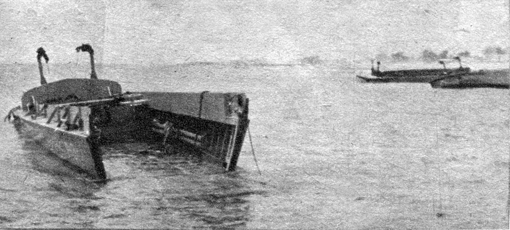

第 12 章
群体的放大器
时间拨回到1961年。一群最聪明的人坐在一起做决定，结果应该比其中任何一个人单独决定更好——这个假设听起来如此合理，以至于很少有人想过要检验它。但它已经被检验过了。
检验的结果是猪湾。1961年4月17日，大约一千四百名古巴流亡者在猪湾登陆。他们的任务是推翻卡斯特罗政权。任务计划是在华盛顿的会议室里制定的，制定者包括哈佛毕业的外交官、普林斯顿训练的经济学家、二战中指挥过战役的军事将领。单独来看，他们中的几乎每一个人都在自己的领域里证明过判断力。
合在一起，他们制造了一场在七十二小时内完全崩溃的军事行动。肯尼迪总统在事后问了一个所有决策者在那样的时刻都会问的问题：怎么会这样？这个问题通常会被翻译成“谁犯了错”。
但心理学家欧文·贾尼斯在读到猪湾事件的档案时，注意力被另一个细节抓住了。他后来把这个细节变成了一个改变了我们对群体决策理解的问题：不是“谁犯了错”，而是“为什么没有人说出来”。贾尼斯查阅了所有能拿到的会议记录和事后访谈。
他发现了一个令人不安的事实：在那些决定发动入侵的会议上，几乎所有与会者在当时都有自己的疑虑。国务卿腊斯克觉得计划过于依赖空中掩护。国防部长麦克纳马拉对登陆地点的地形条件有保留意见。参联会主席莱姆尼策私下认为流亡者的战斗力被高估了。阿瑟·施莱辛格——哈佛历史学家、总统特别助理——甚至在备忘录里写下了长达数页的反对理由。但这些疑虑从来没有真正进入讨论。
施莱辛格的案例尤其值得停下来仔细看。他不是那种不敢说话的人。在学术界，他以尖锐的批评著称。但在那些会议上，他沉默了。事后他在日记里写道，自己当时觉得"在这个房间里提出反对意见会显得非常不得体"。他用了"不得体"这个词——不是"不正确"，不是"没有根据"，而是"不得体"。
贾尼斯意识到，施莱辛格的大脑在那一刻做了一个奇怪的分类动作：它把"表达异议"从"认知判断"的抽屉里拿出来，放进了"社交礼仪"的抽屉。一旦进入那个抽屉，异议就不再是对事实的争论，而是对群体气氛的破坏。
而破坏群体气氛——在一个人人互相尊重、有着共同目标的高凝聚力团队里——会触发一种近乎生理性的不适。这就是贾尼斯后来命名的"群体迷思"的核心机制。他用这个词来描述一种特定的集体决策失败模式：高凝聚力群体在高压力情境下，会自发形成一套维护共识的隐性规范。异议被重新框定为不忠诚。不确定性被重新解读为软弱。
让我们把这句话拆开来看，因为它比它听上去的更精确。"异议被重新框定为不忠诚"——这不是说有人明确指责持异议者不忠。猪湾会议里没有人对施莱辛格说"你不够爱国"。重新框定发生在更微妙的层面：当一个群体的凝聚力建立在"我们都很聪明、我们都想做成这件事"的共识上时，任何对这个共识的挑战都会自动被感知为对群体团结的威胁。不是对观点的威胁，是对团结的威胁。大脑处理的是社交信号，不是逻辑信号。"不确定性被重新解读为软弱"——这同样不是明说。
但当一个团队花了几个月时间建立一个计划，当每个人都在那个计划上投入了自己的声誉和精力，当会议室里的气氛是“我们是来做决定的”而不是“我们是来重新考虑的”，表达不确定就需要一种社交勇气。而那种勇气，在那一刻，看起来会像犹豫不决。像缺乏信心。像软弱。
这里有一个关键点需要立刻明确：群体迷思不是阴谋。它不是一群人合谋压制真相。参与其中的每个人都可以是真诚的、善意的、试图做出最好决定的人。施莱辛格不是懦夫。肯尼迪的顾问们不是愚蠢的人。他们是一个运转良好的团队，而这个团队的运转方式恰好系统性地过滤掉了某些关键信息。
这就是为什么贾尼斯的研究如此重要但又如此难以应用。如果群体迷思是坏人的阴谋，那么解决方案很简单：不要让坏人掌权。但群体迷思是好人之间的社交动态产物。这意味着它可以在任何高凝聚力群体中出现——在企业董事会、在学术委员会、在医院手术团队、在政府内阁。
现在让我们从华盛顿的会议室跳到一个完全不同的场景：一间功能性磁共振成像实验室。
受试者躺在扫描仪里，正在完成一个简单的视觉判断任务。他们看到一组线条，需要判断哪一条与标准线长度相同。任务本身很容易——单独测试时，受试者的错误率不到百分之一。但实验有一个设计好的陷阱。受试者不知道的是，房间里的其他"参与者"实际上是实验助手。在某些轮次中，这些助手会一致给出明显错误的答案。真正的受试者是最后一个回答的。他听到了前面所有人自信地说出同一个错误答案。
实验结果本身是经典的：大约百分之三十七的回答跟随了群体的错误判断。所罗门·阿希在二十世纪五十年代就用纸笔实验证明了这一点。
但fMRI版本揭示了阿希看不到的东西——跟随群体判断时大脑里发生了什么。当受试者看到自己的判断与群体不一致时，杏仁核的激活增强了。杏仁核是大脑的威胁探测系统。它在遇到危险时拉响警报——物理危险、社交危险，对它来说是同一回事。同时激活的还有前扣带皮层，这是大脑的错误监控系统，专门负责在事情不对劲时发出信号。
这两个区域的同时激活说明了一件重要的事：大脑把"与群体不同"当作需要纠正的错误来处理。不是当作一个可能的选项，不是当作值得考虑的替代方案。是当作错误。就像你把二加二算成了五时大脑的反应一样。而当你纠正了这个"错误"——当你调整自己的判断以符合群体判断时——大脑的奖励系统激活了。多巴胺释放。你感到舒服了。
这不是性格软弱的表现。这不是缺乏独立思考能力的证据。这是神经回路在做它被进化设计来做的事情。在人类历史的绝大多数时间里，被群体排斥的风险是真实且致命的。单独狩猎的人类活不了太久。大脑把社交一致性当作生存问题来处理，是因为在漫长的进化过程中，它确实是生存问题。
现在让我们把这些线索连接起来。第8章我们讨论了确定性幻觉——大脑如何在决策瞬间屏蔽不确定性信号，以维持行动所需的确定感。在群体环境中，这个机制获得了一个社会性强化版本：别人也同意，说明我是对的。确定性不需要再从内部产生。它可以从周围人的点头中获得补给。
第10章我们讨论了叙事优势——一个生动的故事如何压制统计数据。在群体讨论中，叙事优势变成回声室效应。一个人讲了一个关于古巴流亡者英勇登陆的类比——也许是诺曼底，也许是某种解放日的想象——这个类比一旦在房间里被接受，就会自我复制。下一个发言的人会在这个类比的基础上继续构建。十页数据分析无法与一个已经植入集体想象的画面竞争。
第11章我们讨论了专家盲点——专业知识的积累如何强化确定性幻觉而不是削弱它。在群体中，专家盲点相互验证：我们都很聪明，所以不会集体犯错。这句话从来没有被说出口过。但它作为一种隐性假设悬浮在猪湾会议的空气里。房间里的每个人都知道房间里的人有多聪明。这种知道本身就成了一种证据。
这就是本章必须推进到的核心论断：群体决策不仅不能纠正个体偏误，反而常常成为偏误的放大器。这个论断本身听起来可能像一个偏误——也许我们只是记住了那些群体决策失败的案例而忽略了成功的案例。这是一种合理的质疑。
它触及了一个严肃的反方论点：所谓"代价盲视"可能只是事后归因的叙事幻觉。人们并非看不见代价，而是在信息不完备、时间压力下做了当时最优的判断，事后因结果偏差而被重新解读为"盲目"。这个反方论点有它的分量。确实存在结果偏差——知道了结果之后，人们会系统性地高估事前可预见性。猪湾计划的支持者中确实有人可以合理地辩称：在当时可获得的情报下，成功并非不可能。
但贾尼斯的分析指向了一个更具体的机制，这个机制不能被"事后归因"完全解释。关键不在于决定本身是对是错。关键在于那些没有被说出来的疑虑。施莱辛格在日记里写下的反对理由不是事后想出来的。它们在事前就已经存在了。它们只是没有被带入讨论。这不是信息不完备的问题。这是信息已经存在但被系统性过滤的问题。
贾尼斯识别出了群体迷思的八个症状。它们不需要全部同时出现才能造成损害。只需要几个症状叠加，就足以让一个高智商群体做出低质量决策。第一个症状是无懈可击的幻觉。
群体发展出一种过度乐观的态度，相信自己不会失败。猪湾计划中有一个关键的假设表述：古巴流亡者登陆后将立即引发全民起义，卡斯特罗政权将迅速崩溃。这个假设被写进了计划文件里，但它从来没有被认真挑战过。事后看，它几乎是幻想。但在当时，它被当作一个合理的预期来对待——不是因为证据支持它，而是因为没有人愿意成为那个说"也许古巴人民并不那么渴望我们介入"的人。
第二个症状是集体合理化。当外部信息威胁到群体共识时，群体成员会集体参与对威胁信息的贬低和忽视。在猪湾决策过程中，有情报显示卡斯特罗的军队规模远超预期。这些情报被重新解释为"可能夸大了"或者"即使如此也可以应对"。合理化不是一个人的行为。它是群体的协作工程。
第三个症状是对群体固有道德的盲目信念。这不是简单的"我们认为自己是好人"。这是一种更具体的认知操作：因为我们的意图是好的，所以我们不太可能做出坏的决定。道德正确性被当作认知正确性的担保。第四个症状是对外群体的刻板印象化。
卡斯特罗的军队被描绘为缺乏战斗意志的乌合之众。这种描绘不需要证据支持。它只需要符合群体已经建立的叙事。
第五个症状是自我审查。这是施莱辛格的症状。疑虑存在但不被表达。自我审查不需要外部压力。它可以是完全内部的——一种对"如果我提出这个问题会怎样"的本能回避。
第六个症状是一致同意的幻觉。因为没有人表达异议，所以大家认为所有人都同意。沉默被解读为赞同。这是群体迷思最阴险的特征之一：它不需要任何人明确施压就能制造出表面的一致。
第七个症状是对异议者的直接压力。当有人确实表达了不同意见时——猪湾会议中确实有少数几次微弱的质疑——其他成员会施加压力使其回到共识线内。这种压力可以是一个表情、一个转移话题的动作、一句"我们可以稍后再讨论这个细节"。
第八个症状是心理警卫的出现。某些群体成员会自发承担起保护群体免受异议信息侵扰的角色。他们不是在压制讨论——他们真诚地认为自己是在保护群体免受不必要的干扰。这八个症状构成了一个自我强化的循环。
高凝聚力产生确定感。确定感抑制异议。异议的缺失进一步强化确定感。每一轮循环都让群体更加确信自己的正确性，同时也让代价信号更加不可见。
现在让我们推进到论证的最后一层。如果群体互动会放大个体偏误，那么一个自然的推论是：旨在改善集体决策的常见建议需要被重新审视。“加强集体决策”本身可能不是答案。“多开会”“多讨论”“多听取意见”——这些建议假设群体过程本身具有纠错功能。但贾尼斯的研究表明，在某些条件下，更多的讨论只会让偏误更深地嵌入集体共识。
这不是说集体决策总是坏的而个体决策总是好的。个体决策有它自己的系统性偏误——这本书的前十一章已经详细拆解了它们。问题是：当这些已经带有偏误的个体被放进一个高凝聚力群体时，他们的偏误不是相互抵消，而是相互验证。
肯尼迪政府在猪湾事件后的做法提供了一个有趣的注脚。他们引入了一个后来被称为“魔鬼代言人”的机制——指定一个人在每次讨论中专门提出反对意见。在古巴导弹危机期间，这个机制发挥了作用。
这一次，他们避免了灾难。但这个机制有一个隐含的前提：指定一个人来提出反对意见，意味着其他人都可以不必承担这个角色。如果魔鬼代言人没有发现某个盲点——而他很可能发现不了，因为他也是带有同样认知偏误的人类——其他人可能会想：既然专门负责提反对意见的人都没说什么，那大概真的没什么可担心的。
机制可以被设计得更聪明。但机制是由人来运行的。而人的大脑在处理社交信号时，仍然会把"与群体一致"体验为安全，把"与群体不同"体验为威胁。杏仁核不会因为你给它发了一份会议流程手册就停止激活。
贾尼斯在1972年出版了关于群体迷思的专著。他的分析框架在此后的几十年里被应用于从越战升级到挑战者号航天飞机灾难的一系列决策失败案例。但贾尼斯自己也知道，他的框架有一个局限性：它描述了一种模式，但很难在事前被用来预防。因为群体迷思的早期信号和高效团队的运作特征之间没有明确的边界。凝聚力是好事——直到它变成压制异议的力量。确定性是好事——直到它变成无懈可击的幻觉。
共识是好事——直到它变成一致同意的幻觉。一个团队在陷入群体迷思的过程中，通常感觉自己在做最好的工作。讨论是热烈的——但在已经被接受的框架内热烈。意见是被听取的——只要它们不挑战基本共识。决策是经过深思熟虑的——但深思熟虑的范围已经被预先限定了。猪湾入侵失败后，肯尼迪政府确实改变了决策流程。
但那一次的教训并没有阻止后来的政府在其他问题上重蹈覆辙。越战升级的决策过程展现了几乎完全相同的群体迷思模式——尽管参与者中有人读过贾尼斯的书。挑战者号发射决策中也出现了类似的模式——工程师有疑虑但没有被有效传达。流程可以被改变。知识可以被积累。
但大脑处理社交信号的方式——杏仁核对不一致的警觉、奖励系统对一致的奖赏、前扣带皮层把异议当作错误来标记——这些不会因为读过一篇论文就改变。这就是本章必须留下的压力点：如果群体是偏误的放大器而不是纠错器，那么当我们把镜头拉远到更大的尺度——市场、行业、整个金融系统——会发生什么？

那些由无数个体和群体决策编织成的复杂网络，是否也在以某种方式放大偏误而不是消解偏误？那些制度化了的专家共识、行业标准、监管框架——它们在第11章结尾被描述为专家盲点的制度化产物——是否也在经历某种形式的群体迷思？猪湾会议桌上的那种社交动力——异议被视为不得体、不确定性被解读为软弱、凝聚力压制了怀疑——并不只存在于政府内阁会议室里。
它存在于任何一群人共同面对不确定性、需要做出决定、并且彼此在乎对方看法的场合。而市场，从说，正是这样一个场合的最大规模版本。在那里，聪明人同样聚集在一起，共识同样自我强化，异议同样被社交压力过滤，代价信号同样在集体的确定性中被遮蔽——只不过参与者的数量从十几个人变成了几百万人，会议桌变成了交易终端，而代价的规模也随之放大到了整个金融系统可以承受的极限。